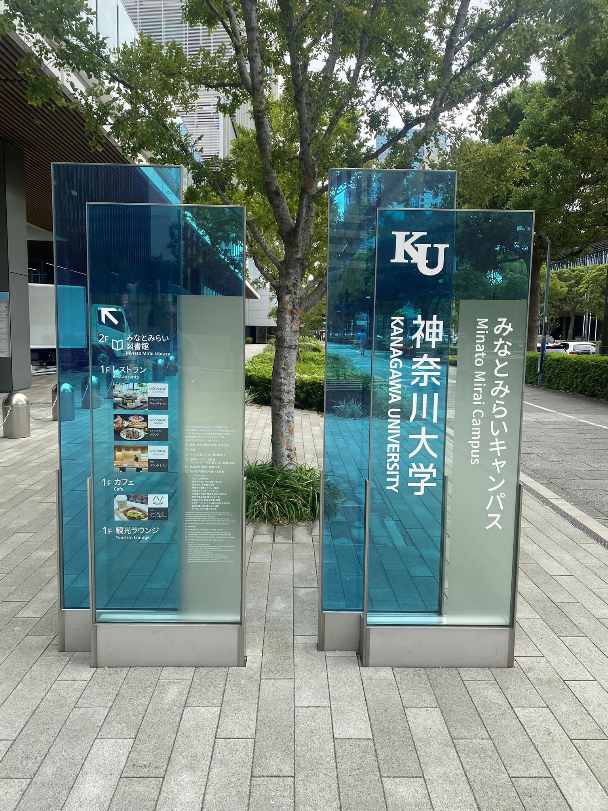
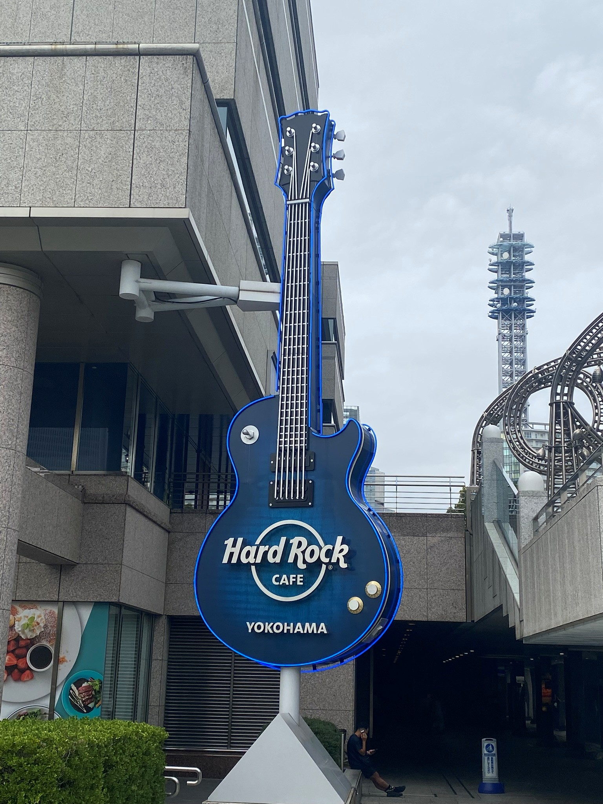
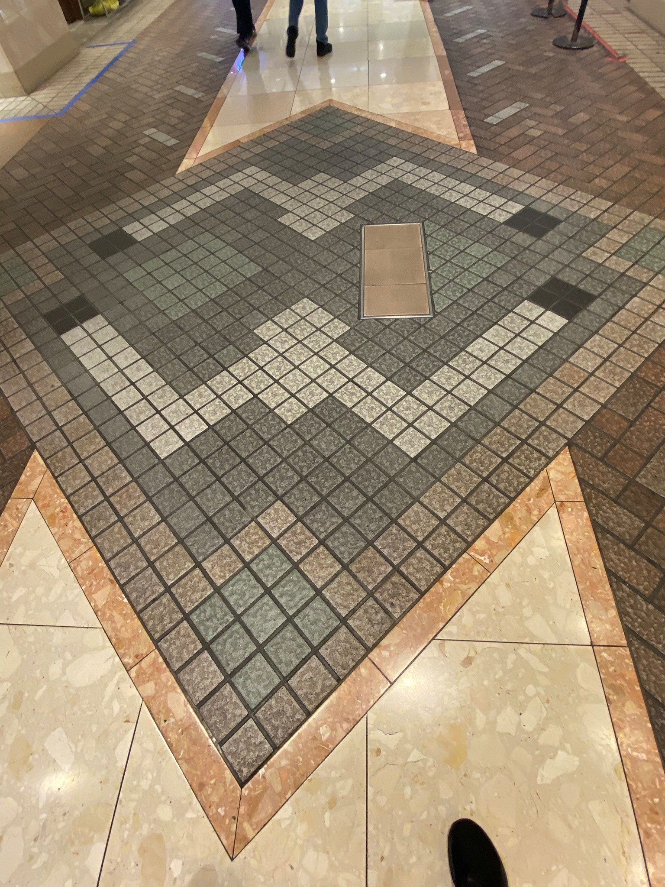

1.神奈川大学 みなとみらいキャンパス

撮影日:2025/10/09 12:26
場所:神奈川大学 みなとみらいキャンパス前
撮影者：しのしの
このキャンパスの看板が意外と独創的と思い撮影。
水色なのは空や海をイメージしているのだろうか。
なぜ二重構造になっているのだろうか。（調べてもヒットせず）
2.Hard Rock CAFE YOKOHAMA

撮影日:2025/10/09 13:07
場所:横浜ランドマークタワー クイーンズタワーA 1F
撮影者：しのしの
アコースティックギターを模した大きな看板
日本に5店舗あるうちの一つで、店内は最新のハードロックの世界観をコンセプトにゴージャスかつスタイリッシュ。
参考サイト
横浜ランドマークタワー Hard Rock CAFE YOKOHAMA
Hard Rock CAFE JAPAN

撮影日:2025/10/10 14:25
場所:YOKOHAMA PORTA 和幸前
撮影者：しのしの
毎回通学路としてこの地下道を利用
床のタイルの模様がカモメになっていることに気づいて撮影。
調べてみるとカモメは神奈川の「県の鳥」となっている。
YOKOHAMA PORTA
神奈川県ホームページ 神奈川県のシンボル